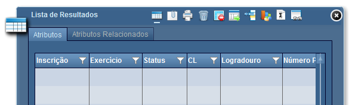
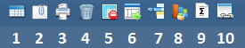

Lista de Resultados
A ferramenta Lista de Resultados é apresentada ao iniciar a aplicação e tem por objetivo exibir as informações obtidas por pesquisas realizadas.

Ao clicar sobre o icone na barra de ferramentas, será apresentada a interface sobre o Mapa.
Nesta interface, também estarão disponíveis as seguintes funcionalidades:

1 - Exibir Resultados: exibe a lista com os resultados obtidos através das consultas do sistema;
2 - Exibir Anexos: exibe a lista com os itens disponibilizados para o registro consultado;
3 - Imprimir Resultados: imprimir informações da Lista de Resultados;
4 - Limpar Resultados: limpar conteúdo exibido na Lista de Resultados;
5 - Remover Itens Selecionados: permite a remoção de um item específico da lista;
6 - Exportar Resultados: exportar informações para um arquivo no formato ".csv" ou Excel (".xls");
7 - Inverter Seleção: inverte os registros selecionados na lista de resultados;
8 - Analisar Gráfico e Temático: abre a ferramenta de Analisar Gráfico e Temático;
9 - Geração de Fórmula: exibe a aba de que de contrução de fórmulas, permitindo aplicar filtros, cálculos e agrupamentos nos registros;
10 - Integrações: permite visualizar algum registro selecionado da aba de resultados em um sistema externo.